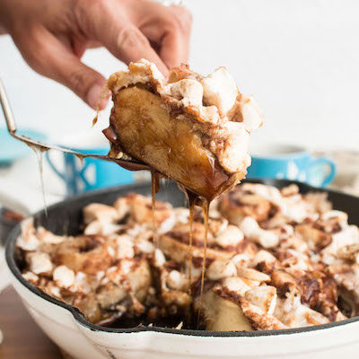

Marshmallow Pecan Sticky Buns

Ingredients
- All-purpose flour for dusting
- 1 pound prepared pizza dough
- 4 tablespoons margarine, metled
- 1/2 cup packed brown sugar
- 2 teaspoons cinnamon
- 1 1/2 cups mini vanilla marshmallows
- 3/4 cup pecans, roughly chopped, divided
Directions
8 servings
- On a lightly floured work surface roll out dough into a 16 x 12"
rectangle. Brush lightly with margarine and reserve remaining margarine.
In a small bowl whisk together brown sugar and cinnamon and sprinkle
over dough. Sprinkle with marshmallows and 1/2 cup pecans.
- Lightly brush an 8" square or round baking dish with some of remaining
margarine. With a long edge facing you, roll up dough tightly. Cut
crosswise into 8 rounds and place in baking dish. Cover and let rise 1
hour at room temperature or place in the refrigerator overnight.
- Preheat oven to 350oF.
- If buns were refrigerated, let stand at room temperature 30 minutes.
Re-melt remaining margarine, drizzle over buns, and sprinkle with
remaining 3/4 cup pecans.
- Bake 35-40 minutes or until browned. Let cool 5 minutes.
This recipe is orignally from Dandies.
Contact Me
earl.clark@umontana.edu
University of Montana
32 Campus Drive
Missoula, MT 59812